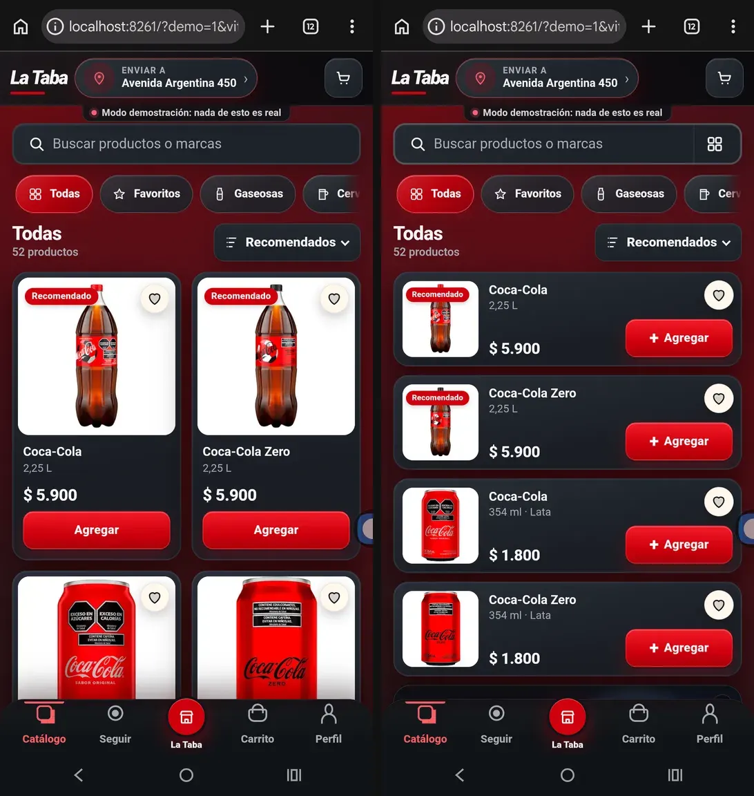
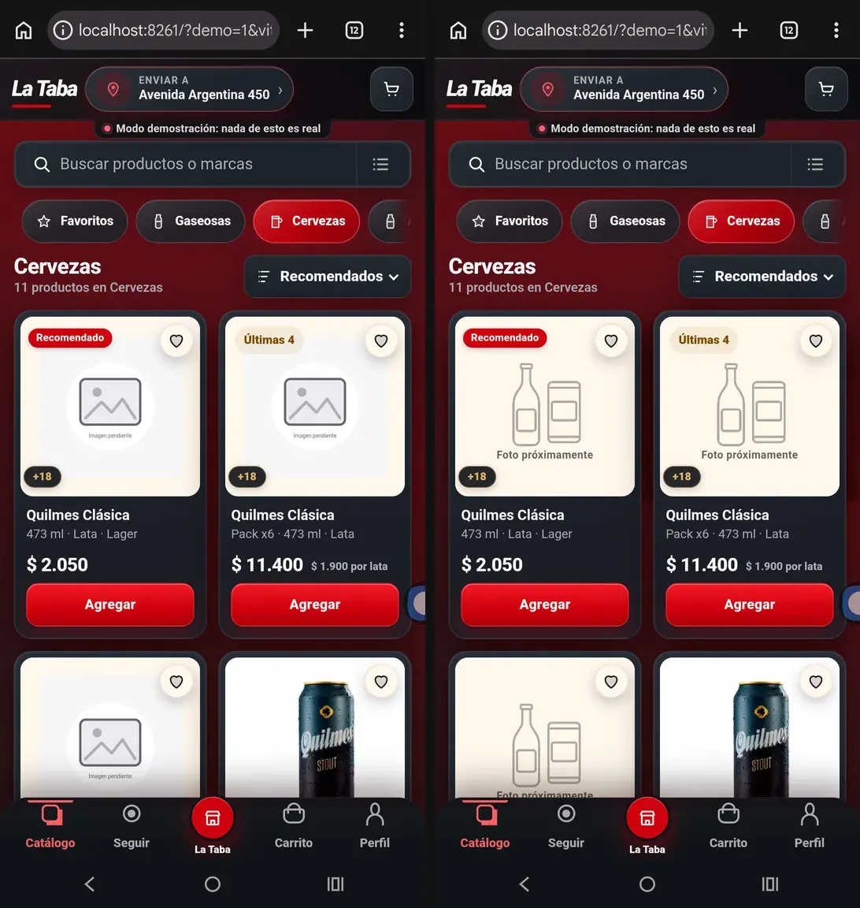
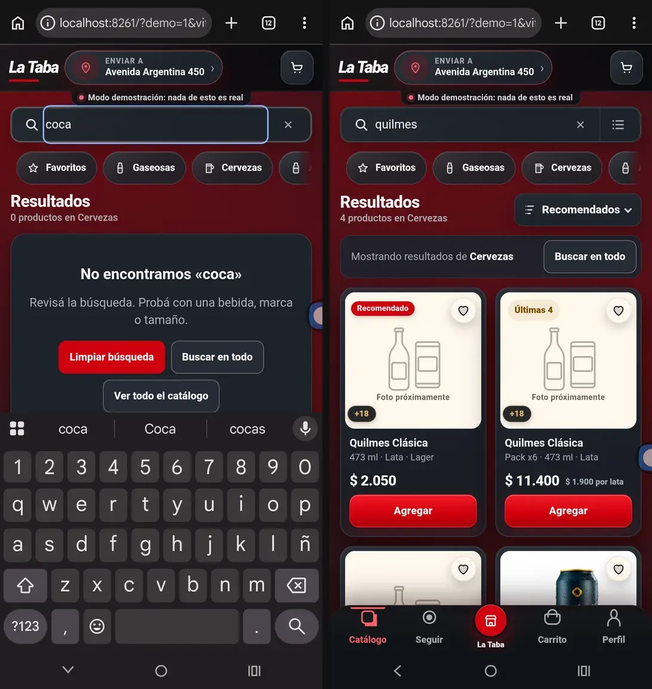
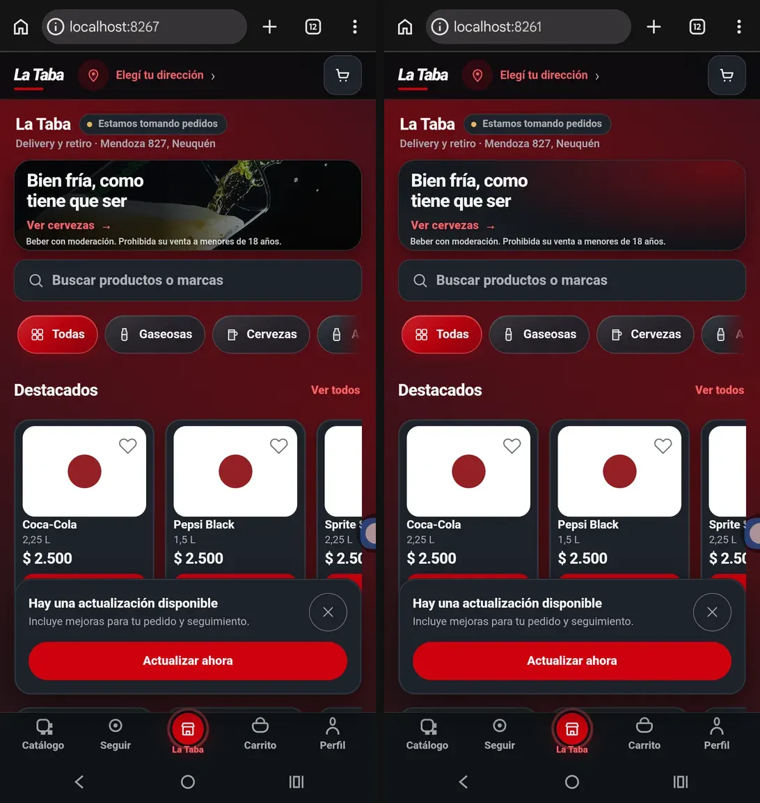
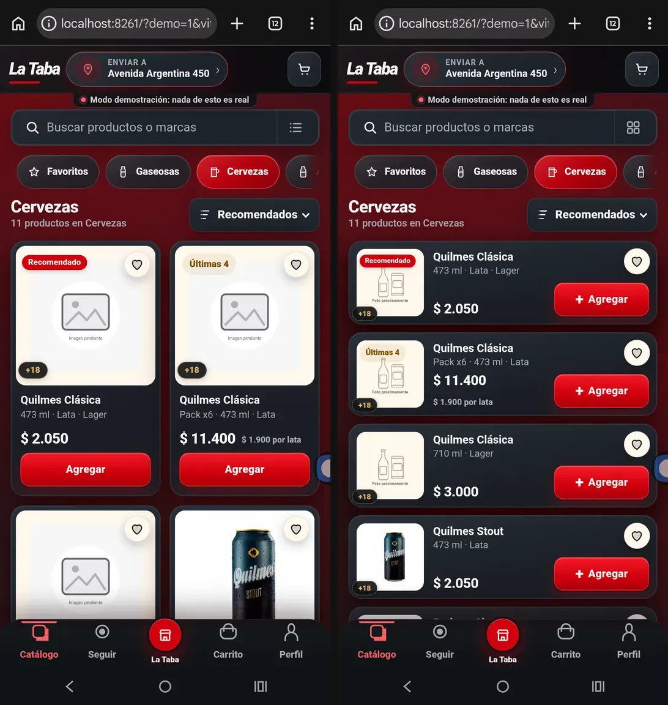

Capturas reales con adb screencap (1080×2400, viewport CSS 432×815). Generadas por tools/generar-comparacion.mjs.
Moto G15 físico, 432×815. Antes sólo grilla (tarjeta de 334 px); después, el botón del buscador ofrece la lista (renglón de 110 px).
ANTESDESPUÉS

Quilmes Clásica no tiene foto autorizada. Antes: «Imagen pendiente» a 8 px sobre rectángulos anidados. Después: siluetas y «Foto próximamente».
ANTESDESPUÉS

Antes, con «Cervezas» activa, buscar «coca» daba «0 productos en Cervezas» con «Todas» fuera de pantalla. Después, con resultados, «Mostrando resultados de Cervezas · Buscar en todo».
ANTESDESPUÉS

Catálogo de Supabase simulado. Antes: hero con foto de otaphotography.com y banners con fotos de terceros. Después: hero con fondo de marca y su puerta a la categoría; cero peticiones a assets/promos/.
ANTESDESPUÉS

Cervezas en lista: foto de 88 px, nombre, presentación, precio y «Agregar» a la vista; los sin foto muestran el placeholder nuevo.
ANTESDESPUÉS
